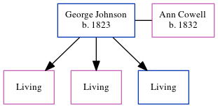

George Johnson 1823 -
[ Home ] | [ Calendar ] | [ Surnames Index ] | [ Census Index ] | [ Family History ]An agricultural laborer, George Johnson, the husband of Ann Cowell (the three times great-aunt of Nigel Horne), was born in Preston, Kent, England in 1823 and married Ann (with whom he had 3 children: Emily Mary, Matilda Emma and George Troward) at St Mary The Virgin, Wingham, Kent, England on Aug 22, 18521. On Apr 7, 1861, he was living at Drove, Minster, Thanet, Kent2.
Citations
- Kent, Canterbury Archdeaconry Marriages - Findmypast
- 1861 England, Wales & Scotland Census - Findmypast (was age 38 and the head of the household)
Media
Kent, Canterbury Archdeaconry marriages 1538-1928 - GBPRS/CANT/M/97246666/1
Kent, Canterbury Archdeaconry marriages 1538-1928 - GBPRS/CANT/M/97246666/2
England & Wales marriages 1837-2005 - BMD/M/1852/3/HZ/000253/024
Family Tree
Generated by ged2site. Last updated on Jun 11, 2024